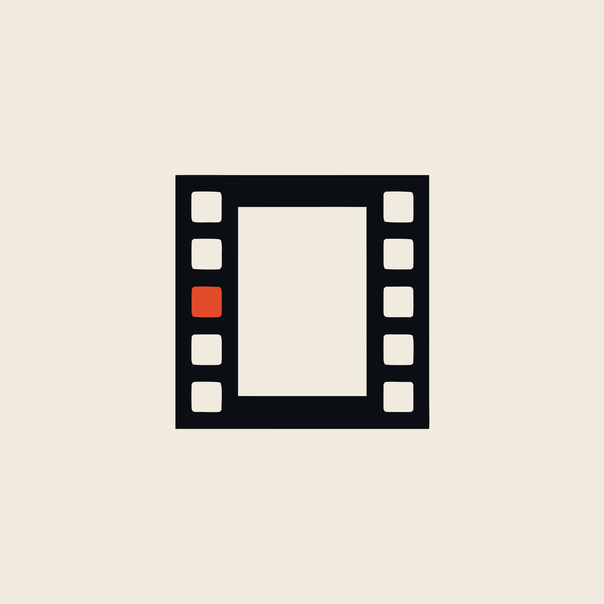
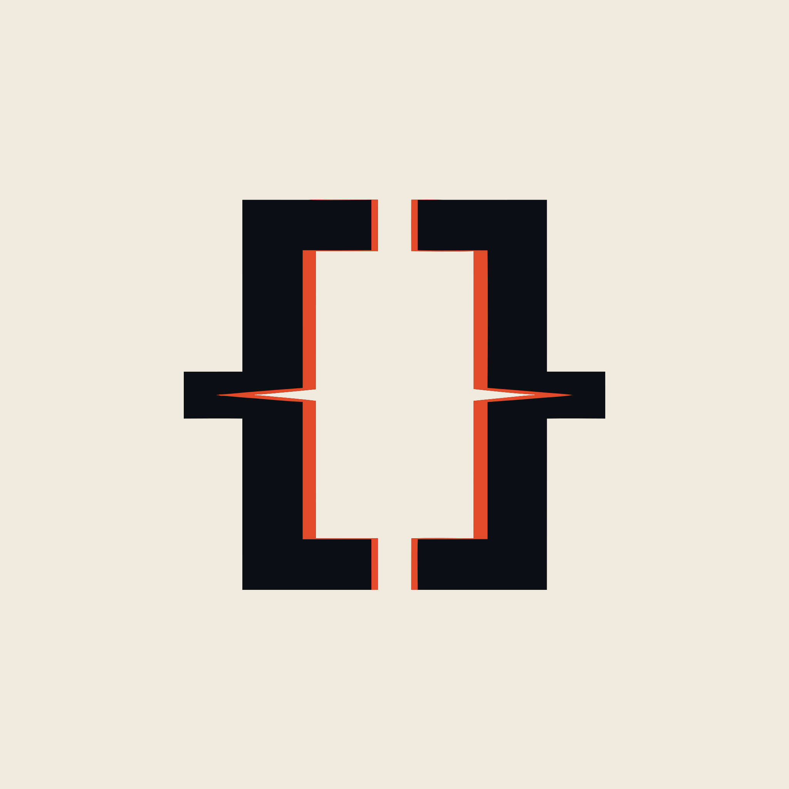

A film frame with one perforation filled. The archive's whole job in one shape: this one was chosen and saved.
Three filed cards climbing. Ink to gold as you ascend — the rank ladder built into the mark.

In-point and out-point facing each other. The editor's gesture, and a frame left deliberately open.